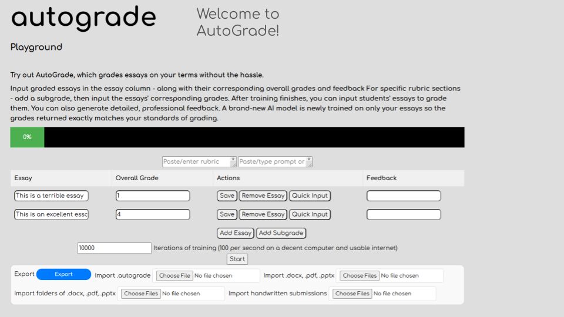
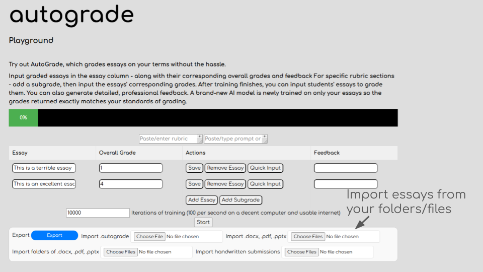
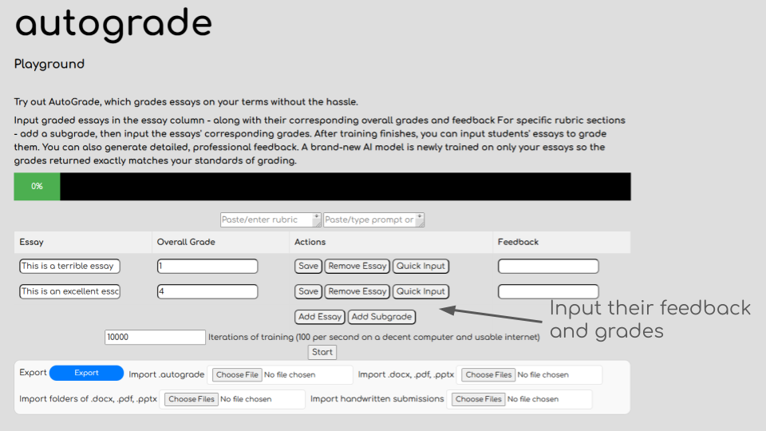
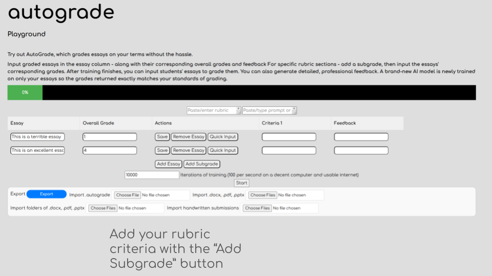
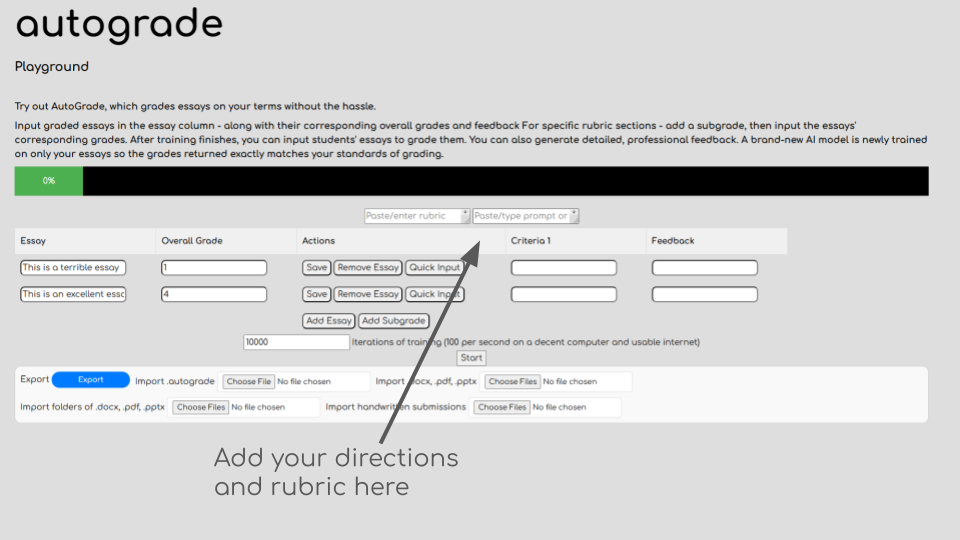
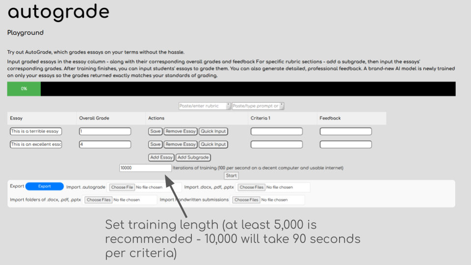

Help
Artificial Intelligence (AI) Basics
Artificial Intelligence (AI) is the technology that allows computers to perform tasks that usually require human thinking. In the case of an AI essay grader, it’s like teaching a computer to read and grade essays, much like a teacher would. The AI doesn't "understand" the essay like a human does, but it analyzes different parts of the writing, such as grammar, how the ideas flow, and if the argument makes sense.
To do this, the AI uses something called Natural Language Processing (NLP). This is a type of AI that helps the computer understand and work with human language. For an AI essay grader, NLP allows the computer to:
- Check grammar and spelling: Looking for mistakes or errors in sentence structure.
- Understand the essay’s flow: Figuring out if the ideas are organized logically.
- Evaluate the strength of the argument: Determining if the essay has a strong point of view with good supporting details.
Essentially, the AI is trained to look at specific parts of the essay and decide if it deserves a good or bad score, similar to how a teacher might grade an essay.
Here is a basic guide on how to use AutoGrade






AutoGrade uses artificial intelligence (AI)
Importance of Training AI for an AI Essay Grader
Training is essential for ensuring that an AI essay grader can accurately and fairly evaluate essays. During the training process, the model is exposed to a large dataset of essays, each with a corresponding grade. This allows the AI to learn the relationship between various essay features and the final grade. Here's why training is critical:
- Accuracy in Grading: Through training, the AI learns to recognize specific patterns in high-quality essays, such as clear thesis statements, well-supported arguments, and proper grammar. With enough data, the AI becomes skilled at grading essays based on these features, ensuring more accurate results than if it relied on simple keyword matching.
- Reducing Bias: Training the AI with a diverse dataset of essays from different writing styles and demographics helps to reduce biases. Without proper training, the model may favor certain writing styles over others. For example, if the dataset only contains essays from one region, the AI might unfairly grade essays written in a different style or dialect.
- Consistency in Grading: A well-trained AI essay grader ensures that every essay is evaluated consistently, regardless of who is submitting it or when. Unlike human graders who might score similarly written essays differently due to subjective interpretation or fatigue, the AI maintains the same standards for every essay it grades.
- Adapting to New Criteria: As grading rubrics evolve or new writing conventions emerge, the AI can be retrained on updated datasets to stay current. Continuous training ensures the grader adapts to changes, such as new standards for academic writing or updated grammar rules.
- Learning from Feedback: When an AI essay grader makes a mistake (e.g., assigning an incorrect score), it can be retrained using feedback from human graders to correct its understanding. This iterative learning process helps the AI improve over time and become more effective at grading essays accurately.
Conclusion
In an AI essay grader, training is the key to ensuring accurate, fair, and consistent essay evaluation. The training process enables the AI to learn the nuances of grading, adapting to diverse writing styles and evolving grading standards. By training the AI with a variety of essays, it becomes better equipped to simulate a human grader's judgment, improving both the speed and quality of essay assessments.